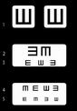

|
NO ME SALEN
EJERCICIOS RESUELTOS DE FÍSICA Y BIOFÍSICA
Ondas - Luz - Defectos de la visión
|
|

|
| Ejercicio 3.19 - Una persona miope de mediana edad tiene su punto próximo a 0,1 m y un poder de acomodación de 2 dioptrías. Hallar su punto remoto: a) Sin anteojos. b) Con anteojos correctores para desplazar su punto próximo a 0,25 m. |
|
|
OK, tenemos acá una combinación de miopía y presbicia o falta de acomodación. Acordate que el ojo normal tiene un poder de acomodación de 4 dioptrías.
Cuando nuestro paciente (¿me dejás que lo llamemos paciente?) mira su punto próximo está utilizando toda la potencia de su ojo. Y cuando mira al punto lejano lo hace con el ojo relajado. Tener esto presente es importante para poder resolver el ejercicio, ya vas a ver (y sin anteojos).
¿Cuál es la potencia de sus ojos al mirar a su punto próximo? Para eso debemos conocer la distancia focal, fp, de sus ojos con ese enfoque. Vamos a Descartes.
fp = xi . xp / (xp + xi )
La posición del punto próximo del paciente, xp, es el dato del ejercicio. Y la posición de la imagen, el fondo de su ojo: xi = 0,02 m
fp = 0,02 m . 0,1 m / (0,1 m + 0,02 m )
fp = 0,002 m²/ 0,12 m
fp = 0,0167 m
Es más fácil trabajar con potencias que con distancias focales. Mirá. La potencia del ojo del paciente mirando su punto próximo:
Pp = 1 / fp
Pp = 1 / 0,0167 m
Pp = 60 dioptrías
Si le sacamos el aumento que le da el máximo poder de acomodación de su ojo, las 2 dioptrías, hallaremos la potencia de su ojo relajado, Pr, que es la potencia con la que se enfocan puntos remotos.
Pr = Pp – A
Pr = 60 dioptrías – 2 dioptrías
Pr = 58 dioptrías
Conociendo la potencia podemos conocer la distancia focal del ojo del paciente relajado (no el paciente... el ojo del paciente).
fr = 1 / Pr
fr = 1 / 58 dioptrías
fr = 0,01724 m
Y conociendo la distancia focal podemos conocer dónde está el punto remoto. Hay que hacerlo rápido, antes de que el paciente se ponga los anteojos. Vamos a Descartes.
xr = fr . xi / (xi – fr )
xr = 0,01724 m . 0,02 m / (0,02 m – 0,01724 m)
xr = 0,0003448 m² / 0,00276 m
|
|
|
|
|
|
Nuestro paciente, ya te habrás dado cuenta, es muuuuy miope. ¡Cuando mira al infinito enfoca objetos que están a 12 centímetros y medio de sus ojos!
La segunda pregunta es claramente un error, no lo cometas con un paciente de verdad porque te harás pasible de un juicio por mala praxis, lapidación en una plaza pública y descuartizamiento sin piedad. ¡A nuestro paciente hay que recetarle anteojos para ver de lejos, no para ver de cerca! Igual hagamos el cálculo. Lo primero que calculamos es la potencia de los lentes que recetaríamos (erróneamente).
Un ojo normal tiene su punto próximo a 0,25 m, enfoque que se logra con una potencia de 54 dioptrías. Como nuestro paciente tenía una potencia de 60 dioptrías le habríamos puesto unos lentes de –6 dioptrías.
Luego, cuando tu futuro asesino relaja el ojo para ver objetos lejanos le queda con una potencia de 52 dioptrías. Y eso se corresponde con una distancia focal de...
flej = 0,01923 m
Con esa distancia focal, quedará en foco un objeto es la posición...
xlej = flej . xi / (xi – flej )
xlej = 0,01923 m . 0,02 m / (0,02 m – 0,01923 m)
xlej = 0,0003846 m² / 0,00077 m
|
|
si además de aprender Física te divertiste, no dejes de leer mi novela policial
Por las barbas de Juno |
|
|
|
Como ves, el pobre hombre no puede ver más allá de 50 centímetros. Claro, le recetaron lentes para ver de cerca, que no necesitaba, y no le recetaron lentes para ver de lejos, que sí necesitaba. |
|
|
|
|
|
Discusión: No te preocupes, los oftalmólogos no pueden cometer este tipo de errores, porque buscan la visión correcta lejana y cercana de manera práctica, ensayando lentes en el consultorio. No haciendo cuentas.
Desafío: ¿Cuál sería la potencia de los lentes que vos le recetarías? |
|
 |
| |
| |
|
| Algunos derechos reservados.
Se permite su reproducción citando la fuente. Última actualización jul-10. Buenos Aires, Argentina. |
|
|
|
|
|
|